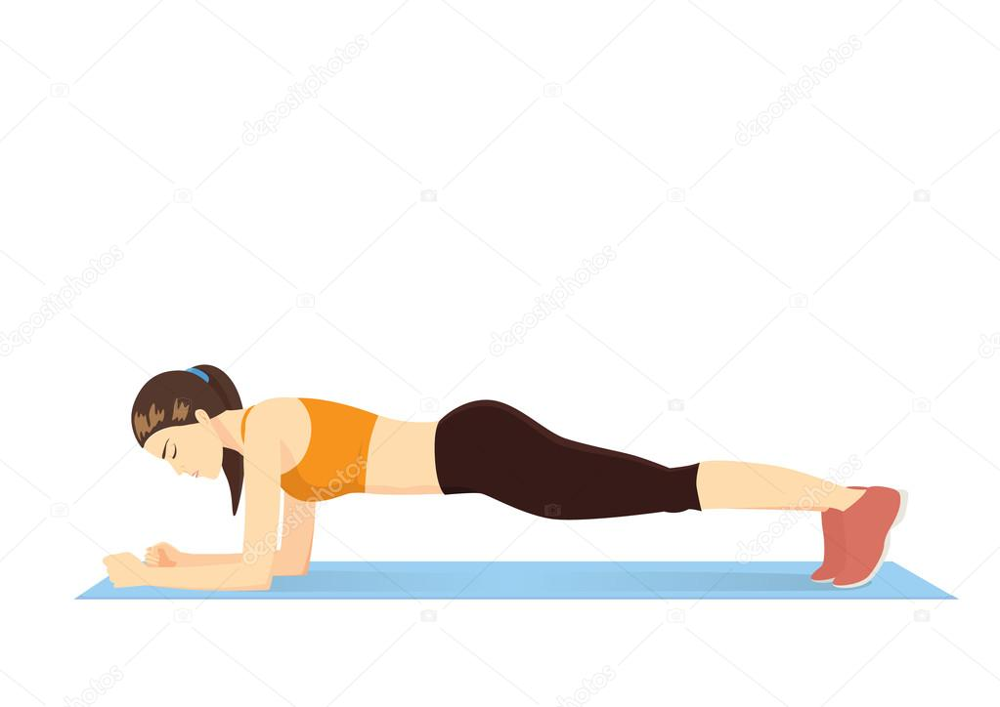

1. Agachamento (Squat)
Benefícios: fortalece pernas, glúteos e core (músculos do abdômen e lombar). Como fazer:
- Fique em pé, com os pés afastados na largura dos ombros.
- Flexione os joelhos como se fosse sentar em uma cadeira.
- Mantenha a coluna reta e o abdômen contraído.
- Volte à posição inicial e repita.
2. Polichinelo (Jumping Jack)
Benefícios: ótimo para o aquecimento e para ativar o sistema cardiovascular. Como fazer:
- Fique em pé, com os braços ao lado do corpo.
- Pule abrindo as pernas lateralmente e levantando os braços acima da cabeça.
- Volte à posição inicial e repita rapidamente.
3. Flexão de braço (Push-up)
Benefícios: fortalece peitoral, tríceps, ombros e abdômen. Como fazer:
- Deite-se de barriga para baixo, com as mãos apoiadas no chão na altura do peito.
- Mantenha o corpo reto e os pés juntos.
- Empurre o chão com as mãos até esticar os braços, depois desça devagar.
4. Prancha (Plank)
Benefícios: fortalece o core, melhora a postura e o equilíbrio. Como fazer:

- Deite-se de bruços e apoie os antebraços e as pontas dos pés no chão.
- Mantenha o corpo reto, como uma tábua.
- Contraia o abdômen e segure a posição.
5. Elevação de pernas (Leg Raises)
Benefícios: fortalece o abdômen inferior e melhora a mobilidade. Como fazer:

- Deite-se de costas com as pernas esticadas.
- Levante as pernas juntas até formar um ângulo de 90 graus com o tronco.
- Abaixe lentamente sem encostar os pés no chão e repita.